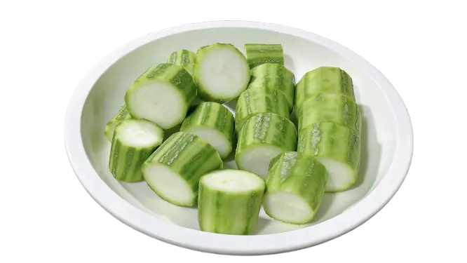
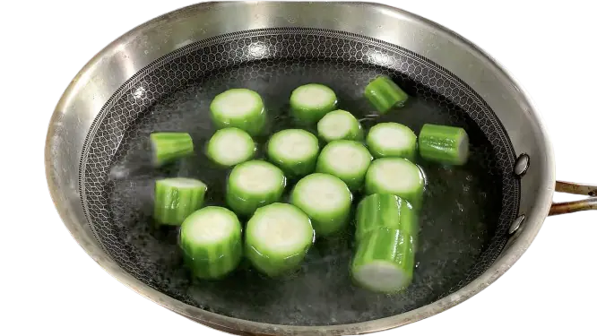
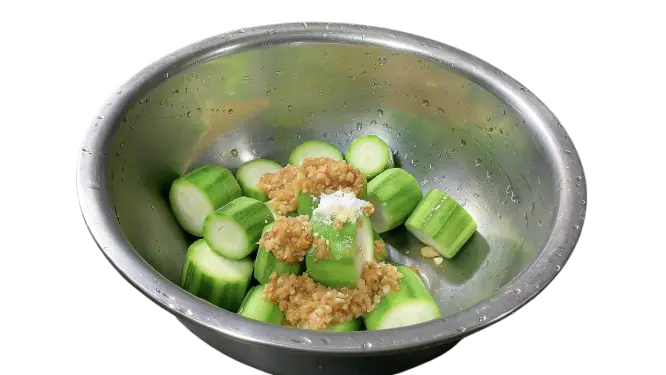
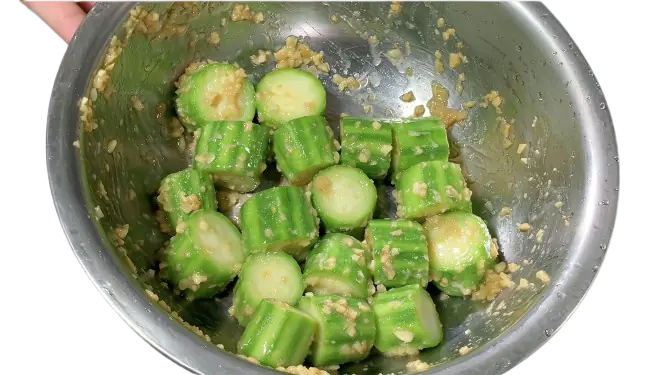
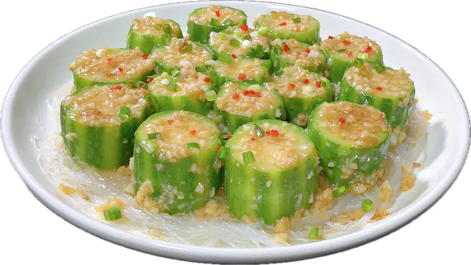

准备食材
丝瓜、粉丝、蒜蓉酱、葱花、盐、鸡粉。
粉丝 浸泡、打底
- 粉丝用凉水浸泡备用 （大概20分钟），控干水分；
- 将粉丝剪短 （粉丝太长，不好夹）；
- 粉丝拌蒜蓉，铺在盘底。


丝瓜 焯水、调味
- 丝瓜去皮，切成3公分左右的小段，尽量切得长度均匀，长短差异太大，整出来熟度不均；
- 丝瓜焯水一分钟左右，控干水分捞出来装盆调味，添加适量蒜蓉酱、少量盐、少许鸡粉、少许生粉，搅拌均匀；




蒸
- 丝瓜摆盘装到粉丝上面，（粉丝丝瓜菜肴装盘完成）；
- 起锅烧开水，放入菜肴，盖上锅盖，开中小火蒸5分钟；
- 取出菜肴，在丝瓜顶部撒上葱花，淋上滚油激发葱花香味；
- 最后添加少量酱油在盘底，完成。

